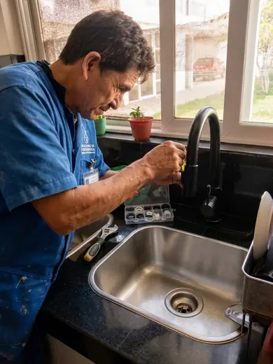
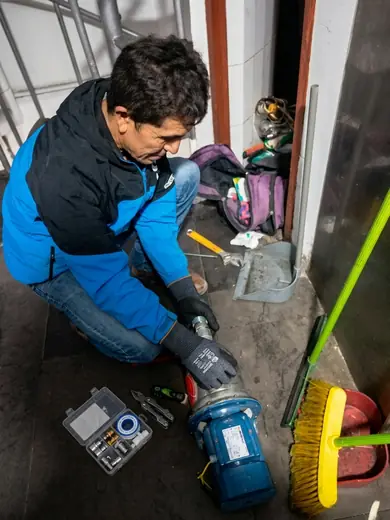
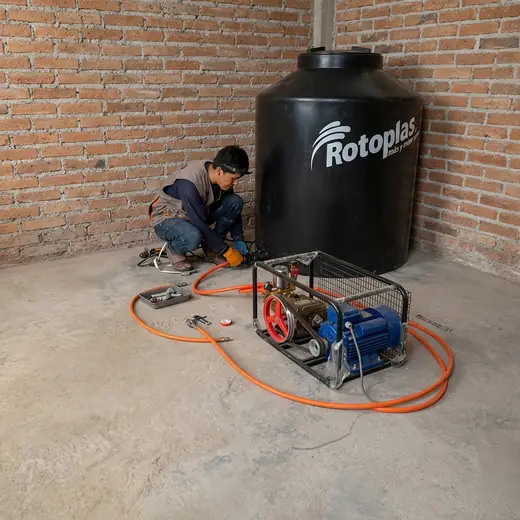
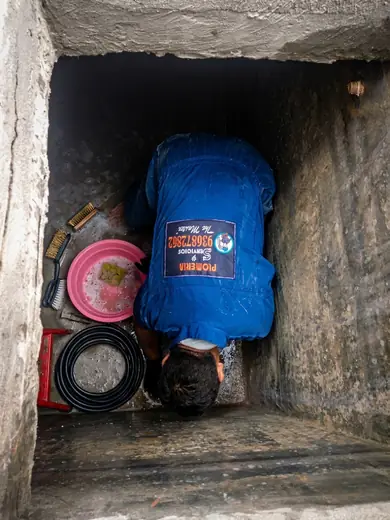
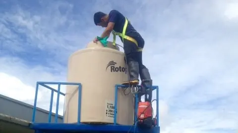
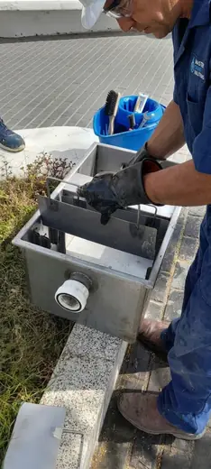
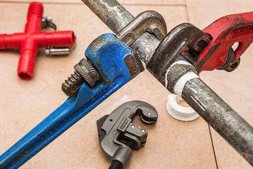
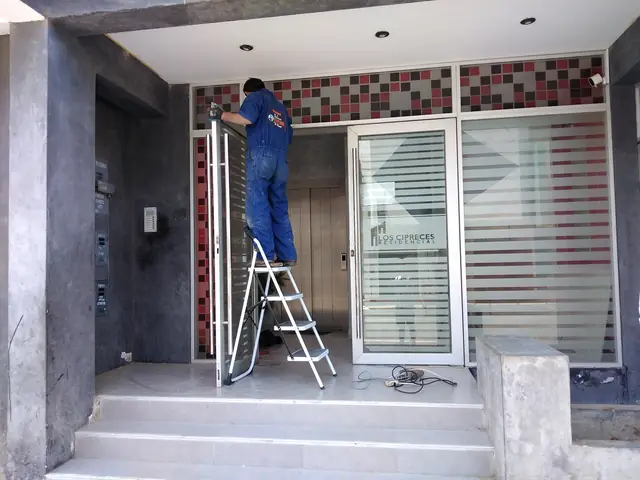

Reparaciones
Detección de fugas de agua
Ubicación de fugas ocultas con equipo de escucha para reducir roturas innecesarias.
Consultar este servicio ↗Catálogo de servicios
Filtra por categoría o busca por palabra clave. Abre cada tarjeta para ver los detalles y solicitar el servicio por WhatsApp.
Explora nuestros servicios. Los tiempos son orientativos; el alcance y la cotización se confirman al evaluar tu caso.
15 servicios disponibles
Ubicación de fugas ocultas con equipo de escucha para reducir roturas innecesarias.
Consultar este servicio ↗
Reparación de fugas visibles u ocultas en conexiones, caños, llaves y tuberías.
Consultar este servicio ↗
Cambio, instalación y mantenimiento de griferías de cocina, baño y lavandería.
Consultar este servicio ↗
Revisión, instalación y mantenimiento de sistemas de bombeo domésticos o residenciales.
Consultar este servicio ↗
Instalación de tanque de agua y conexiones para mejorar reserva y presión.
Consultar este servicio ↗
Limpieza interna de tanques de agua para retirar sedimentos, sarro y residuos acumulados.
Consultar este servicio ↗
Desinfección posterior al lavado para mantener el agua almacenada en mejores condiciones.
Consultar este servicio ↗
Limpieza y mantenimiento de trampas de grasa para evitar malos olores y atoros.
Consultar este servicio ↗
Limpieza de desagües obstruidos en lavaderos, duchas, sanitarios y cajas de registro.
Consultar este servicio ↗
Instalación de duchas, mezcladoras, llaves y accesorios para agua fría y caliente.
Consultar este servicio ↗
Instalación y cambio de inodoros, lavatorios, accesorios y conexiones sanitarias.
Consultar este servicio ↗Instalación y reparación de redes de agua fría y caliente en viviendas y departamentos.
Consultar este servicio ↗Revisión periódica de puntos de agua, desagüe, válvulas y conexiones principales.
Consultar este servicio ↗
Atención para problemas urgentes de agua, fuga, drenaje o accesorios sanitarios.
Consultar este servicio ↗Orientación para elegir griferías, flexibles, válvulas, bombas y accesorios compatibles.
Consultar este servicio ↗Cuéntanos tu caso por WhatsApp y te orientamos sin compromiso.